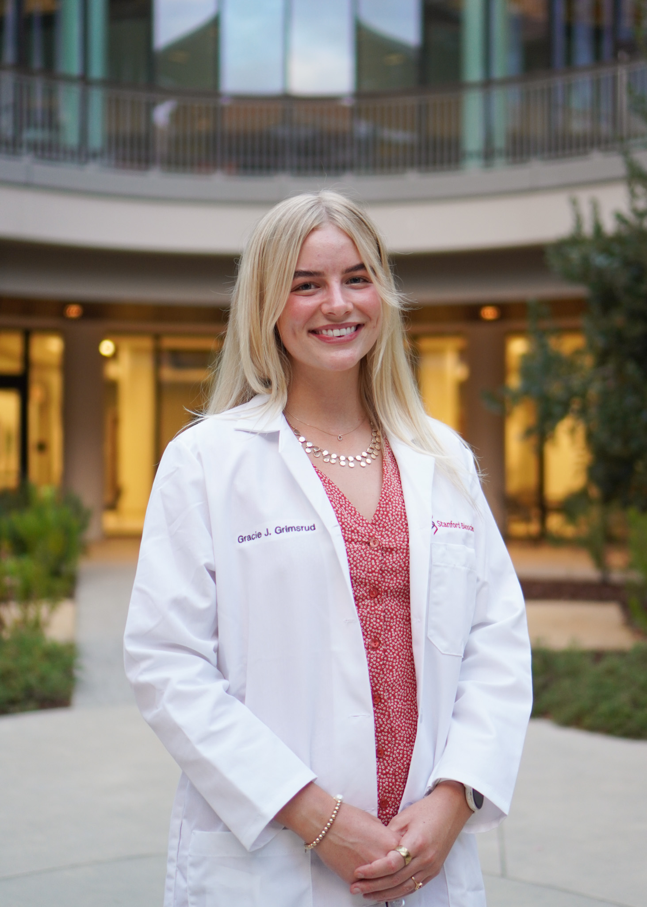
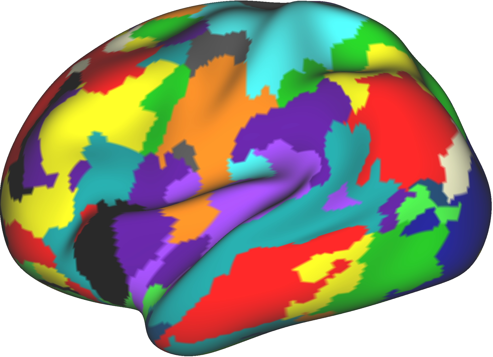

About Me
I am currently a first-year PhD student at Stanford University in the Neurosciences Departmental Program. I also hold a fellowship as part of Stanford's Graduate Fellowship in Science & Engineering. Previously, I conducted undergraduate and post-baccalaureate research at the University of Minnesota's Masonic Institute for the Developing Brain, under the mentorship of Dr. Damien Fair & Dr. Steve Nelson. Additionally, I have experience at the intersection of scientific discovery and translational application of research through work in a Neuroimaging & Neuromodulation based start-up company, Turing Medical.
My research interests lie in three main categories: clinically translational application of neuroimaging in neuropsychiatry and neurodevelopmental disorders; investigating neural mechanisms underlying fMRI signal; and advancement of fMRI acquisition & analysis methods.
I am passionate about making science both accessible and engaging for youth, particularly science surrounding mental health and wellness. I intend to expand upon my experience in youth outreach gained through Mayo Clinic's InSciEd Out Program during my time at Stanford University & beyond.